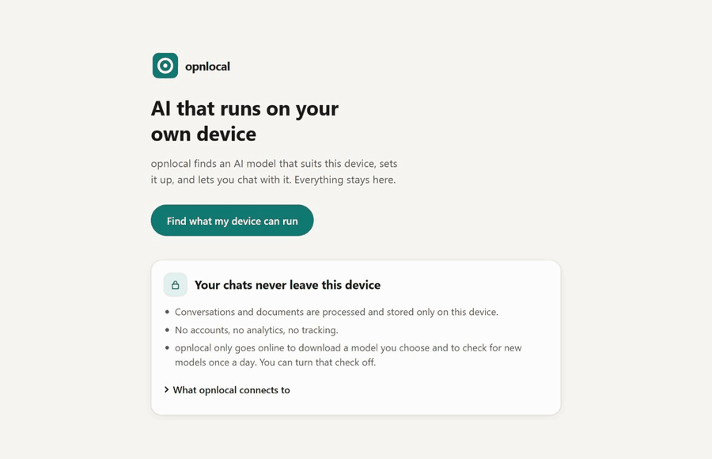

Run AI locally without learning how local AI works.
opnlocal checks your device, finds AI models that actually fit, downloads one, benchmarks it, and lets you chat privately on your own hardware.
Free and open source. No account. No telemetry.
Your hardware. Your model. Your AI.
There are hundreds of models and dozens of ways to shrink each one. opnlocal reads what your device has and offers only what fits, so you pick between a few plain choices instead of a spreadsheet.

How it works
-
Check your device
opnlocal checks memory, graphics, processor and free storage.
-
Tell it what you need
Everyday help, coding, writing, or private documents.
-
Pick from a few recommendations
Not hundreds of model names and quantization options. Just Recommended, Lighter & faster, or Stronger, but tight.
-
Chat locally
The model runs on your own device. It's measured there first, so you know how fast it really replies.
Why opnlocal
Tools like Ollama and LM Studio are great when you already know which model and settings you want. opnlocal is for everyone else: it removes the technical choices instead of exposing them.
You decide
- What you want AI for
- Which of a few picks to try
- What to ask
opnlocal handles
- Choosing models that fit your hardware
- VRAM, memory budgets and context sizes
- Quantization and file formats
- Downloading and verifying the file
- Measuring real speed on your device
- Running the chat locally, with no account
Download for every device
Each link always gives the newest version. Free, no account.
| Your device | Download | Then |
|---|---|---|
| Windows 10 or 11 PC | Windows installer | Open the file. Windows may say "Windows protected your PC" because opnlocal isn't yet registered with Microsoft: click More info, then Run anyway. No admin password needed. |
| Mac with Apple silicon (M1 or newer, macOS 13+) | Mac disk image | Open it and drag opnlocal to Applications. The first time, right-click the app and choose Open. |
| Linux (Ubuntu 22.04 or newer and similar) | .deb package AppImage | Open the .deb with your software installer. The AppImage runs on most distributions without installing: make it executable and open it. |
| Android phone (Android 9+, from about 2019) | Android app (APK) | Open the downloaded file and allow installing from this source when asked. Not on Google Play yet. |
| iPhone (iOS 17+) | Unsigned app file | Needs sideloading with your own Apple ID, for example with Sideloadly. Not in the App Store yet. |
Older versions and checksums: all releases on GitHub.
Your conversations stay on your device.
- Models run locally.
- Chats and attached documents are stored locally.
- There are no accounts.
- There is no analytics or telemetry.
- The app goes online only to download a model you chose and to check for new models once a day, which you can turn off.
Open source, Apache 2.0
The whole app, the engine and the model catalog are public. Read it, build it, or change it.
Support opnlocal
opnlocal is free and open source. If it saves you time or makes local AI easier to use, you can support development with a coffee.